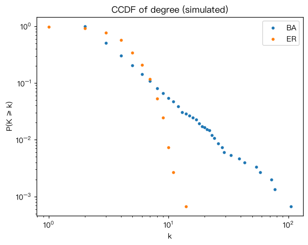

Example01 / 13
重尾度分布与 Jeong 式统计
比较 1500 节点的 BA 网络（模拟 PPI）与同节点数、同边数的 ER 随机网络： (a) 画度的互补累积分布（CCDF）双对数图；(b) 仿照 Jeong 等（2001）统计度 ≤ 5 与度 > 15 的节点比例。 输出解读：BA 网络的 CCDF 呈长尾，存在度很大的枢纽；ER 网络几乎没有度 > 15 的节点。 注意：CCDF 近似直线不等于证明了幂律，严格判断需最大似然拟合与替代分布比较。
Output输出图

Output文字输出
BA：度 ≤ 5 的比例 = 0.857，度 > 15 的比例 = 0.025，最大度 = 105 ER：度 ≤ 5 的比例 = 0.790，度 > 15 的比例 = 0.000，最大度 = 14
Code代码
# 比较 1500 节点的 BA 网络（模拟 PPI）与同节点数、同边数的 ER 随机网络：
# (a) 画度的互补累积分布（CCDF）双对数图；(b) 仿照 Jeong 等（2001）统计度 ≤ 5 与度 > 15 的节点比例。
# 输出解读：BA 网络的 CCDF 呈长尾，存在度很大的枢纽；ER 网络几乎没有度 > 15 的节点。
# 注意：CCDF 近似直线不等于证明了幂律，严格判断需最大似然拟合与替代分布比较。
import numpy as np
import networkx as nx
import matplotlib.pyplot as plt
G_ba = nx.barabasi_albert_graph(1500, 2, seed=1) # 模拟数据，仅用于演示方法
G_er = nx.gnm_random_graph(1500, G_ba.number_of_edges(), seed=1)
def ccdf(G):
"""返回 (ks, P)：ks 为排序后的不同度值，P[i] = 度 >= ks[i] 的节点比例。"""
deg = np.array([d for _, d in G.degree()])
ks = np.unique(deg)
P = np.array([np.mean(deg >= k) for k in ks])
return ks, P
for name, G in [("BA", G_ba), ("ER", G_er)]:
deg = np.array([d for _, d in G.degree()])
print(f"{name}：度 ≤ 5 的比例 = {np.mean(deg <= 5):.3f}，度 > 15 的比例 = {np.mean(deg > 15):.3f}，最大度 = {deg.max()}")
ks, P = ccdf(G)
plt.loglog(ks, P, "o", ms=3, label=name)
plt.xlabel("k"); plt.ylabel("P(K ≥ k)"); plt.legend(); plt.title("CCDF of degree (simulated)")
plt.show()Run在浏览器中运行
首次加载 Python 环境约需 20–40 秒；可以修改参数后重新运行。